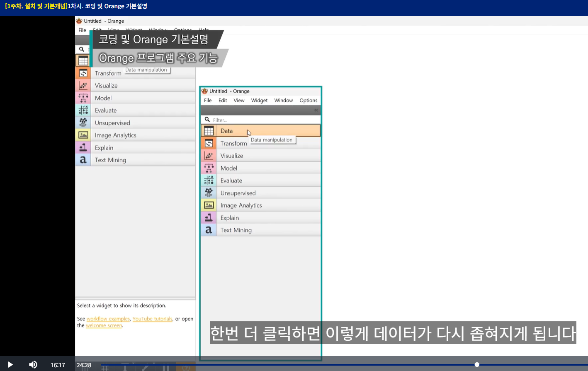

위젯(Component) 기반이란, 각각의 기능을 가진 작은 도구를 연결하여 하나의 분석 작업을 수행하는 방식입니다.
Orange = 데이터 분석용 레고 블록 — 코딩을 직접 하지 않고도 분석 흐름을 만들 수 있습니다.
위젯 기반 분석 · 지도/비지도학습 · 회귀분석 · 모델 평가를 총 9문제로 학습합니다.
01. 위젯(Widget)이란?
위젯은 하나의 특정 기능을 수행하는 작은 도구입니다. 각 위젯에는 입력(Input)과 출력(Output)이 있으며, 연결선을 통해 데이터를 다음 도구로 전달합니다. Orange는 이러한 시각적 프로그래밍(Visual Programming) 방식을 사용합니다.

왼쪽 패널이 위젯을 Data · Transform · Visualize · Model · Evaluate · Unsupervised · Image Analytics · Explain · Text Mining 아홉 카테고리로 묶어 둔 화면. 카테고리를 한 번 클릭하면 그 안의 위젯 목록이 펼쳐지고, 같은 자리를 한 번 더 클릭하면 다시 접힙니다.
위젯 이름
기능
관광 데이터 분석 예시
File
데이터 불러오기
관광객 설문조사 엑셀 파일 불러오기
Data Table
데이터 확인
관광객 300명의 설문응답 확인
Scatter Plot
산점도 그리기
관광 만족도와 재방문의도의 관계 확인
k-Means
군집분석
관광객을 3개 유형으로 분류
Box Plot
분포 비교
관광객 유형별 만족도 비교
02. 클릭형 위젯 연결 지도
네모 상자를 클릭하면 기능과 결과를 확인할 수 있습니다. 관광객 설문 300건을 가정한 교육용 예시입니다.
↗
↘
→
WIDGET 01
File — 데이터 불러오기
관광객 300명의 만족도, 여행지출액, 재방문의도가 들어 있는 엑셀 파일을 불러옵니다.
분석 결과: 관광객 설문 데이터 300건
연결 구조: File → Data Table (데이터 확인), File → k-Means → Box Plot (군집 비교). Scatter Plot은 File과 연결하는 별도 시각화 도구입니다. 실제 군집분석은 분석변수 선택, 결측치 처리 및 단위 표준화 등을 점검한 뒤 수행합니다. Box Plot에는 k-Means의 군집 정보가 포함된 출력 데이터를 연결합니다.
03. 실제 Orange 공식 예제
Orange 작업 공간(Canvas)에서 위젯을 연결하면 출력 데이터가 다음 위젯의 입력으로 전달됩니다. 공식 예제의 연결 구조를 확인해 보세요.